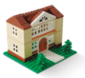
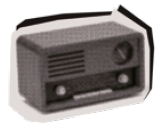
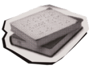
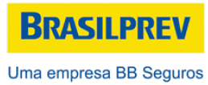
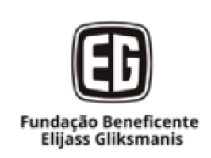

COVER
Page 1
Message from the
Presidency and the
Superintendency
The Fundação Dorina Nowill para Cegos achieved many milestones in 2024. Month by month, our team worked with cohesion and dedication, pursuing every goal.
Inspired by the Paralympic year, we entered the world of sports with several new initiatives, partnerships, and activities!
We officially launched the Dorina Sports Foundation at the Brazilian Paralympic Training Center in São Paulo, alongside two renowned institutions: Naurú, for Athletics initiation, and Cadevi, supporting the men’s Goalball team.
We continue expanding the Foundation’s reach in Brazil and worldwide. We covered the Paralympics in Paris with our board member and blind photographer, João Maia, who, with every shot, captured the emotion of witnessing each Brazilian victory.
Another new activity was Takkyu Volley, which has already led to our athletes participating in a competition in São Paulo. The sport is offered to all individuals served by the Foundation who wish to participate, mixing ages and genders.
Still in rehabilitation, we established successful partnerships with the remote inclusion support program. We shared our knowledge with the Florivaldo Vargas Institute for the Blind of Mato Grosso do Sul (ISMAC) and with the Catarinense Association for the Integration of the Blind (ACIC), aiming to expand services for blind and low-vision people and to extend our experience to other Brazilian states.
These actions were part of our Strategic Planning, which seeks to increasingly expand our reach. As well as investing in the Foundation’s infrastructure, with renovations that will increase our service capacity, in addition to the acquisition of a new building. The goal is that, by 2026, the number of people served will increase by 50%.
We can say that the end of 2024 was marked by records! We reached the highest number of services in our history and many other achievements that you will find in this report. We hope you continue supporting us in the coming years so that, together, we can overcome obstacles and have even more reasons to celebrate!

Francisco H. Della Manna
Chairman of the Board of Trustees (2019 – 2024)
Alexandre Munck
Executive Superintendent
About the
Fundação Dorina
Nowill para Cegos
Promoting autonomy and independence for blind and low-vision people while raising society’s awareness about inclusion and accessibility are the goals of the Fundação Dorina Nowill para Cegos.
The institution’s name comes from its founder, who lost her sight at 17 but never gave up studying and reading. At that time, she faced many barriers and began her fight to have more Braille books available in Brazil. Thus, in 1946, the Foundation for the Blind’s Book in Brazil was established, with the mission to produce Braille books — an activity that, even 78 years later, continues to be carried out by the Foundation.
But Dorina took her dream much further, and other missions emerged throughout her journey. Over the years, the Foundation has modernized, innovated, and evolved in several areas of inclusion for this audience, both in editorial, graphic, and audiovisual solutions as well as in inclusion support services. Recognized in Brazil and worldwide for its excellent work, the Dorina Foundation marks another year of dedicated work and transformative actions, not only for people with disabilities but also for each one of us.
Page 2
Dorinateca Digital
Library of the
Foundation
5,735 works in the collection
2,427 downloads
1,531 registered readers
1,020 works loaned throughout Brazil
Inclusive
Reading
Network
The Inclusive Reading Network works with institutions (schools, libraries, cultural centers, NGOs) aiming to promote accessible reading practices and activities with books in various cities across Brazil.
• 3,092 people directly impacted by the Network’s actions.
• 1,000 registered institutions, including 416 new registrations.
• 860 books redistributed to 92 institutions in Brazil.
• 428 municipalities served.
• 14 cities hosted in-person meetings.
• 105 activities focused on inclusive reading and accessibility.
LEGO® Braille
Bricks Project
The LEGO® Braille Bricks, an initiative by the Fundação Dorina Nowill para Cegos in partnership with the LEGO® Foundation, transforms LEGO® bricks into a Braille reading and writing system. In 2024, there were:

4,435 kits distributed
3,447 educators enrolled in the training course with 100 hours of instruction

29 partner municipalities

2,301 schools
Access to
Autonomy
The multidisciplinary teams of the Fundação Dorina Nowill para Cegos offer opportunities for a life with more autonomy and independence to their clients.
1,791 blind or low-vision people were served by the habilitation and rehabilitation areas, as well as 1,552 family members.
More than 50,612 services were provided to both people with visual impairment and their families.
Page 3
Purpose,
Values
& Vision
PURPOSE
Promote inclusion and accessibility for blind and low-vision people to jointly transform lives and society.

VALUES
• Ethics are non-negotiable.
• Transparency in what we do and how we do it.
• Respect is so valuable that we never dispense with it.
• Diversity is a fact; inclusion is our choice.
• Perseverance in everything we do, which is why we never give up.
• Commitment to our purpose.
• Innovation to build the future while valuing our legacy.
VISION
To be recognized worldwide as a reference in inclusive leadership, expanding, innovating, and multiplying impactful actions for all generations.
Global
Visual
Impairment
Statistics
There are 253 million people with visual impairment worldwide.
According to the World Health Organization (WHO), if more effective prevention and/or treatment actions were taken, between 60% and 80% of blindness cases could be avoided.
Access to
Information
The Foundation brings the world of imagination and knowledge to thousands of blind and low-vision people across the country through accessible, educational, and literary books in several formats.
Accessibility Solutions Numbers of the Dorina Foundation in 2024:

AUDIO
Production of 299 projects, totaling 36,714 pages.
VIDEO
236 PNLD videos were produced, with about 40 recorded, edited, and finalized.
DIGITAL
Production of more than 76,940 pages and 996 titles.

BRAILLE
Printing of over 7 million Braille pages, with editing of 266,024 pages.
Page 4
Access to
Education
COURSES
Courses are offered for blind and low-vision people to assist with entering the job market, either to work for a company or to start their own business.
Students from various states across Brazil participate, as the distance learning (EaD) format allows service expansion beyond the limits of São Paulo.
New courses were offered to Foundation clients in 2024, resulting in 319 students qualified in: arts; customer service; entrepreneurship in the digital era; computer skills; English; digital marketing; basic and intermediate massotherapy; meditation; choir; Braille music notation; music therapy; theater; and administrative techniques.
A new initiative was offering Braille and basic transcription workshops to the families of clients, further promoting inclusion for the relatives of people with disabilities.
TRAINING CENTER
The Dorina Foundation offers courses and training, both in-person and distance learning (EaD), in the field of accessibility. Among the topics, one of the most accessed is Audio Description, which has increasingly become a requirement in various contexts. All courses available on the platform are free for visually impaired people previously registered in our digital library, Dorinateca.
Additionally, the Foundation’s team also provides customized training in companies, tailored according to each client’s interests. One of the major actions carried out in 2024 was the change of the Training Center’s sales platform, which received a new layout, easier access, and an expanded course offering.
Two new courses were also launched: Introduction to Braille Publishing and Audiobook Production, focused on producing accessible books. Furthermore, the Orientation and Mobility Training course (1st group), lasting four months, was implemented, and through a partnership, the Foundation held an in-person Audiobook Narration course (1st group).
Finally, a major achievement: the Educator Training course for the use of LEGO® Braille Bricks was included on the Foundation’s platform.
A total of 654 students enrolled in the courses offered by the Training Center.
Scan the QR Code to explore our courses.
Access to
Work
The Employability team maintains a talent pool composed of blind and low-vision individuals interested in job opportunities. Through free courses, lectures, and other events, these candidates are prepared for interviews and daily work life.
Additionally, the Employability team has a registry of companies interested in hiring people with visual impairments. Just as candidates are prepared, companies undergo extensive awareness efforts so that hiring this group goes beyond merely fulfilling quota laws and carries meaningful impact. The goal is to promote genuine inclusion, which brings benefits to both people and companies.
1,288 people served

144 companies sensitized

Page 5
Funding
Sources
2024
Page 6
Vision
Partners
Meet the companies that have contributed to the achievements and progress of the Dorina Foundation through sponsorships of projects and other contributions and donations:
DIAMOND

SILVER
BRONZE

COPPER

INSTITUTIONAL PARTNERS
Page 7
Be Part of
This Story

• INCLUSION SUPPORT SERVICES
Services for blind and low-vision people.
atendimento@fundacaodorina.org.br
(11) 5087-0999 – Option 2
(11) 5087-0998
• GUIDED TOUR
centrodememoria@fundacaodorina.org.br
(11) 5087-0955
• DONOR RELATIONSHIP CHANNEL
Make a donation and help transform the lives of people with visual impairments.
relacionamento@fundacaodorina.org.br
(11) 5087-0999 – Option 4
• SPONSORSHIPS AND PARTNERSHIPS
Support the Dorina Foundation’s projects through Incentive Laws for tax deductions or by making direct sponsorships.
parceria@fundacaodorina.org.br
(11) 5087-0982
• ACCESSIBILITY SOLUTIONS
Contact our team to make your products and services more accessible.
comercial@fundacaodorina.org.br
(11) 5087-0999 – Option 1
• BECOME A VOLUNTEER
voluntariado@fundacaodorina.org.br
(11) 5087-0971
Staff
Executive Superintendency
Alexandre Munck
Resource and Marketing Management
Taisa Pelucio
Communication and Marketing Coordination
Carolina Orilio
Content Production
Ariett Gouveia
Editing
Carolina Orilio
W5 Advertising
Support
Cláudia Piazza Costa
Rodrigo Torres
Thamiris Treigher
Photography
Acervo da Fundação Dorina
Antonio Vinícius Lemos
Cecília Furtado
Cléo Acevili
Rodrigo Torres
Graphic Design and Layout
W5 Advertising
FOLLOW THE FUNDAÇÃO DORINA ON SOCIAL MEDIA
fundacaodorinanowill
fundacaodorina
 fundacaodorina
fundacaodorina
fundacaodorina

Scan the QR Code to access the ACCESSIBLE VERSION


Fundação Dorina Nowill para Cegos
Rua Doutor Diogo de Faria, 558
Vila Clementino
ZIP Code: 04037-001
São Paulo/SP – Brazil
fundacaodorina.org.br
+55 (11) 5087-0999 / (11) 5554-0999
***
HTML
Produzido por Fundação Dorina Nowill para Cegos
*
Linearização: Letícia Saracini Duarte
Descrição de imagens: Francielle Maria Chies
Diagramação: Bruno Alves Suniga
Revisão: Marina Vargas O. Angelelli
Supervisão: Marina Vargas O. Angelelli